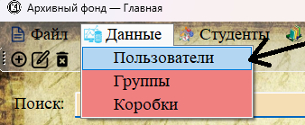
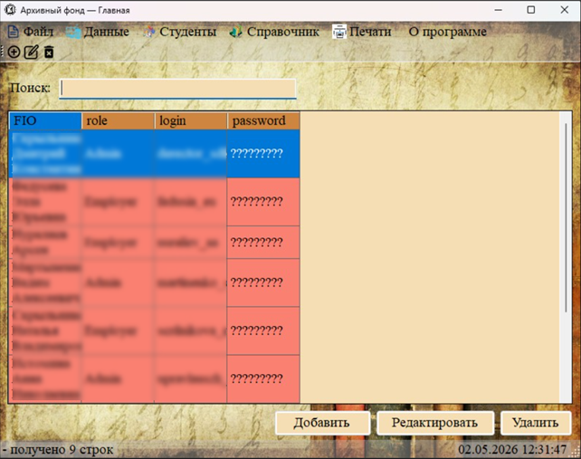

Раздел «Администрирование» объединяет функции, доступные только пользователям с ролью «Администратор». Сюда входит управление учётными записями сотрудников, а также резервное копирование и восстановление базы данных.

Рис. 1. Пункт меню «Пользователи» (доступен только администратору)
Кто имеет доступ к администрированию
| Роль | Управление пользователями | Резервное копирование |
|---|---|---|
| Администратор (Admin) | ✓ Доступно | ✓ Доступно |
| Сотрудник (Employer) | ✗ Недоступно | ✗ Недоступно |

Рис. 2. Форма управления пользователями (доступна только администратору)
Содержание раздела
| Подраздел | Описание |
|---|---|
| 3.1. Управление пользователями | Просмотр списка учётных записей, добавление, редактирование и удаление пользователей, назначение ролей |
| 3.1.1. Роли пользователей | Различия между правами «Администратора» и «Сотрудника» |
| 3.1.2. Добавление нового пользователя | Создание новой учётной записи для сотрудника |
| 3.1.3. Редактирование данных пользователя | Изменение ФИО, логина, роли |
| 3.1.4. Смена пароля | Как изменить пароль пользователя (доступно в форме редактирования) |
| 3.2. Резервное копирование и восстановление | Создание и восстановление резервных копий базы данных |
| 3.2.1. Создание резервной копии (.sql) | Сохранение всей базы данных в файл формата .sql |
| 3.2.2. Восстановление из копии | Восстановление базы данных из ранее созданного .sql файла |

Рис. 3. Таблица раздела «Пользователи»
Важные особенности администрирования
• Системный администратор (логин «Admin», user_id = -1) защищён от удаления через интерфейс программы. Его можно редактировать, но нельзя удалить.
• При удалении пользователя его учётная запись удаляется из базы данных безвозвратно. Все связанные данные (если они есть) также будут удалены в соответствии с настройками внешних ключей.
• Перед восстановлением базы данных из резервной копии программа не создаёт автоматическую резервную копию текущего состояния. Рекомендуется сделать это вручную.
1. Регулярно создавайте резервные копии базы данных (особенно перед массовыми изменениями).
2. Используйте разные пароли для разных пользователей и меняйте их время от времени.
3. Не давайте роль «Администратор» сотрудникам, которым не нужен полный доступ к системе.
4. Храните резервные копии в надёжном месте (отдельная папка на сервере, внешний диск, облачное хранилище).